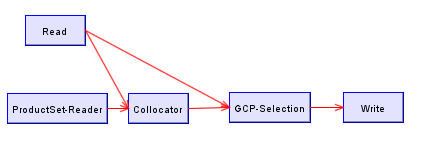
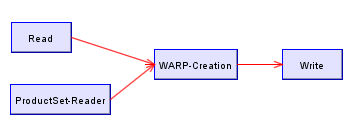

Coregistering Products
NEST performs coregistration automatically by maximizing correlation in
windows around Ground Control Points (GCPs).
This allows pixel-by-pixel comparisons of multiple datasets
that cover the same region.
Images
may be fully or only partly overlapping and may be from acquisitions
taken at different times using multiple sensors or from multiple
passages of the
same satellite.
Image co-registration is fundamental for Interferometry SAR (InSAR)
imaging and its applications, such as DEM map generation and analysis.
To obtain a high quality InSAR image, the individual complex images
need to be co-registered to sub-pixel accuracy.
Coregistration is achieved in NEST using two graphs, one for GCP
Selection and the other to apply the Warp.
GCP Selection
The GCP Selection graph uses the Collocate and GCP Selection operators.

1. Create a new project for your coregistered data products.
2. Open a product as the master and produce a subset of it for the
desired area of interest.
3. Open the master product and from the GCP Manager enter a grid of
evenly spaced GCPs and save the product.
4. Open a list of slave products which overlap the master area of
interest.
5. From the Graph menu open the GCP Selection graph.
6. Drag and drop the master product from the project tree to the source
entry of the Reader
7. Drag and drop the slave products from the project tree to the
ProductSet Reader
8. Press Process to begin the GCP Selection graph
9. You may open the resulting GCP selected slave images and view/modify
the GCPs that have been shifted in the slaves.
Warp Application
The Warp graph uses the Warp operator.

1. From the Graph menu open the Warp graph
2. Drag and drop the master product from the project tree to the source
entry of the Reader
3. Drag and drop the gcp selected slave products from the project tree
to the ProductSet Reader
4. Press Process to begin the Warp graph
Note: Coregistration is currently only available for detected products.
Coregistration of complex products will be available in the next
release of the software.